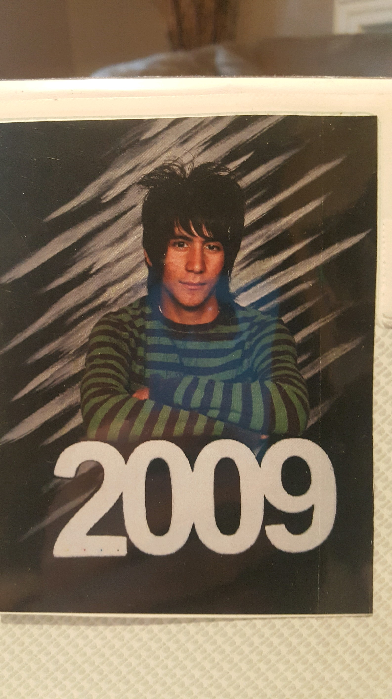

About Me
My name is Aldo Gil. I am the last born of 5 siblings to parents that immigrated to the United States from south of the border. Son of Antoniel Gil, a trucker/hay squeeze, and Martha Gil, homemaker. I am also the younger of a set of twins by ten minutes.I am 23 years old, born in 1995, single, crushing hard. My interests include anime, music, manga, baking, and eating sweets.
I have bounched around a lot from school to school. I graduated middle school from Richland Junior High. Only to even eventually go through a string of highschools: Shafter High, Silect Community School, 34 Street Community School, before eventually dropping out of highschool all together before senior year. Eventually I purchased a GED from Delano Adult school and attended Bakersfield College while also a member of the track and xc team. Eventually moving on to Taft College for to semesters, followed by Porterville Community College before finally arriving at Cal State LA.